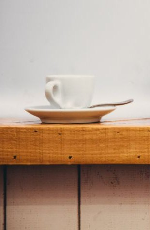

Ana sayfa / Kahvaltı
Kahvaltı sofrası
Küçük tabaklar, demli çay ve aceleye gelmeyen bir sabah.
Aşağıdakiler bir kahvaltı sofrasında genellikle bulunan lezzetler. Güncel menü, porsiyonlar ve fiyatlar için WhatsApp'tan sorun, bilgi verelim.

Temsili görsel Temsili görsel
Temsili görselSabahın seçenekleri
Fiyat yazmıyoruz; menü mevsime ve güne göre değişebilir. Aşağıdakilerden hangisinin o gün sofrada olduğunu sormanız yeterli.
Sofra haritası
Bir tabağa dokunun: klasik bir kahvaltı sofrasında o tabakta genelde neler olur, görün. Merak ettiklerinizi soru listenize ekleyin, liste WhatsApp mesajı olarak hazırlansın.
Bir tabağa dokunun
Masadaki her tabak klasik bir kahvaltı sofrasının bir köşesini anlatır: peynirden çaya kadar. Bu bilgiler geneldir; o gün sofrada ne olduğunu sormak için tabakları soru listenize ekleyin.
Başka sormak istedikleriniz
Kime: Deniz Nadide Duru Breakfast · WhatsApp
Merhaba, güncel kahvaltı menünüzü paylaşabilir misiniz? Teşekkürler.
 Temsili görsel
Temsili görselHangi kahve size göre?
Kahvaltıdan sonra bir kahve iyi gider. Aşağıdaki kısa rehber, kahve türlerini tadın yoğunluğuna göre sıralıyor. Menüde hangilerinin olduğunu sorun.
- Espresso
Basınçla demlenen, küçük ve yoğun kahve; pek çok kahvenin temeli.
- Türk kahvesi
Cezvede, ince öğütülmüş kahveyle pişer; telvesiyle içilir, yanında su gelir.
- Americano
Espressonun sıcak suyla uzatılmış hâli; filtreye yakın bir içim.
- Filtre kahve
Öğütülmüş kahvenin üzerinden sıcak su geçirilerek demlenir; uzun ve hafif.
- Cappuccino
Espresso, sıcak süt ve kalın süt köpüğü; dengeli ve kremsi.
- Latte
Daha çok süt, ince köpük; en yumuşak içimlilerden.
Çay nasıl demlenir?
Çaydanlıkla demleme, kahvaltı sofralarının alışılmış yolu. Evde de denemek isteyenler için kısa bir hatırlatma:
- Alttaki demlikte suyu kaynatınÇaydanlığın büyük alt kısmına taze su koyun, küçük demliği üzerine yerleştirin; buhar üst demliği ısıtır.
- Kuru çayı ekleyinSu kaynayınca üst demliğe kuru çayı koyun ve üzerine kaynar sudan bir miktar dökün.
- Kısık ateşte demlenmeye bırakınAteşi kısıp çayı demlenmeye bırakın; süresi çayın türüne ve damak zevkinize göre değişir.
- Bardağa önce dem, sonra suİnce belli bardağa önce demi, sonra sıcak suyu koyun. Rengi "tavşan kanı" olunca tamamdır.
Kahvaltı sözlüğü
İstanbul'a yeni gelen bir arkadaşınızla kahvaltıya mı geliyorsunuz? Sofradaki adların kısa açıklamaları burada.
- Serpme kahvaltı
- Peynirden reçele, yumurtadan sıcaklara her şeyin küçük tabaklarda masaya "serpildiği", ortaklaşa yenen kahvaltı.
- Menemen
- Domates, biber ve yumurtanın tavada birlikte pişirildiği sıcak yemek. Soğanlı mı soğansız mı tartışması hiç bitmez.
- Sahanda yumurta
- İki kulplu küçük tavada, yani sahanda tereyağıyla pişirilen yumurta.
- Kaymak
- Sütün yüzeyinde toplanan yoğun krema tabakası; balla birlikte kahvaltının en sevilen ikililerinden.
- Acuka
- Biber salçası, ceviz ve baharatlarla hazırlanan, ekmeğe sürülen ezme.
- Pişi
- Mayalı hamurun kızgın yağda kabartılmasıyla yapılan, sıcak yenen hamur işi.
- Sigara böreği
- Yufkanın peynirli iç harçla ince uzun sarılıp kızartıldığı börek.
- Simit
- Pekmezli suya batırılıp susama bulanan, halka biçimli İstanbul klasiği.
- Tahin-pekmez
- Tahinle pekmezin karıştırılmasıyla yapılan, tatlı ve yoğun bir sürmelik.
- Tavşan kanı
- Çayın ne açık ne koyu, berrak kızıl rengi için kullanılan deyim.
- Çay tazelemek
- Bardaktaki çay soğumadan yenisiyle değiştirmek; uzun kahvaltıların ritmi.
- Kahvaltılık
- Peynir, zeytin, reçel, bal gibi kahvaltıda yenen her şeyin ortak adı.
Kalabalık bir sofra mı kuruyorsunuz?Doğum günü, aile buluşması ya da toplantı kahvaltısı için kişi sayısını ve saati yazın, bilgi verelim.
Yer talebi oluşturun